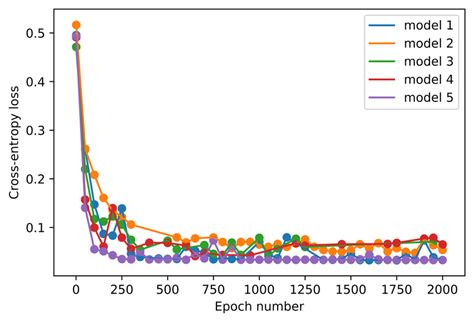

Loss Functions
Loss functions are important in Neural Network. It’s at the heart of how the machine can learn by trial and error. The value calculate by this function is used to adjust the weight of the input data to nudge the NN to lean toward output the correct answer.
Loss function refer a single value calculation, while cost function refers to whole or group of value combine together

There are many loss functions that work well for particular problem. So choosing the appropriate one is critical to get the machine the work and archieve your goal.
Cost functions
The cost function refer to the sum of all loss functions
Type of Loss function
There are many type of Loss functions. Each one is approriate for certain tasks understand how each of them work is essential to reach your result.
Cross Entropy Loss
The cross entropy loss for some target \(\color{chocolate}{ x}\) and some prediction \(\color{chocolate}{ p(x)}\) is given by:
\[ \color{chocolate}{ H(x) = -\sum x\, \log p(x) }\]
But since our \(\color{chocolate}{x}\) are 1-hot encoded, this can be rewritten as \(\color{chocolate}{ -\log(p_{i})}\) where \(\color{chocolate}{i}\) is the index of the desired target.
This can be done using numpy-style integer array indexing. Note that PyTorch supports all the tricks in the advanced indexing methods discussed in that link.
Logarithm
Using logarithm is important to get stable compute in practic. Since in actual compute the machine using floating point number to do caculation. And exact precision is depend on the number of bit uses. If the number of bit is too small the value compute is underflow or the carry bit is large the value will be overflow, on the other hand, if the number of bit is too much the bit are waste.
Log can help speed up the compute by convert the multiplication and division which is slow into addition and substraction which is fast. Not only that in some case it may help avoid the overflow and underflow problem.
Note that the formula
\[\color{chocolate}{ \log \left ( \frac{a}{b} \right ) = \log(a) - \log(b)}\]
gives a simplification when we compute the log softmax, which was previously defined as \(\color{chocolate}{ (x.exp()/(x.exp().sum(-1,keepdim=True))).log()}\)
def log_softmax(x): return (x.exp()/(x.exp().sum(-1,keepdim=True))).log()
def log_softmax(x): return x - x.exp().sum(-1,keepdim=True).log()Then, there is a way to compute the log of the sum of exponentials in a more stable way, called the LogSumExp trick. The idea is to use the following formula:
\[\color{chocolate}{ \log \left ( \sum_{j=1}^{n} e^{x_{j}} \right ) = \log \left ( e^{a} \sum_{j=1}^{n} e^{x_{j}-a} \right ) = a + \log \left ( \sum_{j=1}^{n} e^{x_{j}-a} \right )}\]
where \(\color{chocolate}{ a }\) is the maximum of the \(\color{chocolate}{ x_{j}}\).
def logsumexp(x):
m = x.max(-1)[0]
return m + (x-m[:,None]).exp().sum(-1).log()
def log_softmax(x): return x - x.logsumexp(-1,keepdim=True)Negative Log Likelihood (NLL)
When using logarithm to compute value that less than \(\color{chocolate}{1}\) (probability) the result is negative value.
- log 1 = 0
- log .5 = -0.301
- log .9 = -0.045
- log .1 = -1
\[\color{chocolate}{ \log(p_{i}) = -p_{i}\ \ \text{when}\ i \lt 1 }\]
Therefore the minus sign is used to convert it to positive value